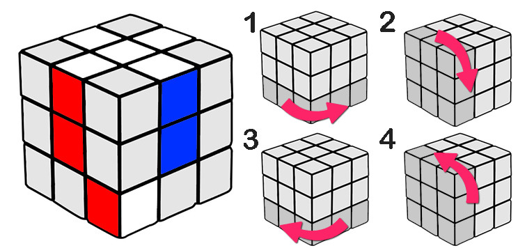
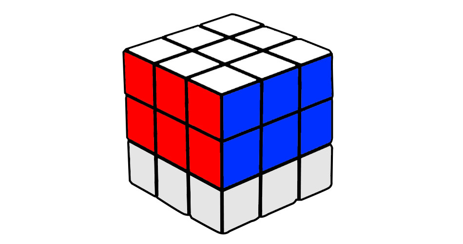

si no tienes mucho tiempo puedes descargar el manual en pdf en el siguiente link para que lo veas con mas calma solucion
>
PASO 1. RESOLUCIÓN DE LA CRUZ SUPERIOR (BLANCA)
Usaremos el siguiente código de colores:
En color blanco, azul, rojo, naranja, verde y amarillo, aquellas superficies que nos interesen.
Usamos el gris claro para las que no sean relevantes en ese momento.
En color gris oscuro, la superficie que se mueve.
Ahora que sabemos cómo es el cubo en líneas generales y tenemos uno entre manos, vamos a desordenarlo. Como queramos. La idea es darle un par de vueltas para empezar con un cubo algo caótico. El primer paso es resolver la cruz superior, dejándola de color blanco como arriba.
Lo que viene a continuación son los diferentes casos que podemos encontrarnos. Usamos los colores azul y rojo, pero es válido también para el verde y el naranja, que son sus opuestos respectivos.
Caso 1. Arista en la capa inferior con el blanco hacia abajo.
Caso 2. Arista en capa inferior con el blanco hacia un lado.
Caso 3. Arista en la capa intermedia. Si nos damos cuenta, el final de este paso es el caso 1 de arriba. A veces ocurren estas cosas y hay que volver a pasos anteriores. Os avisaremos cuando ocurra.
PASO 2. COMPLETAR LA CARA SUPERIOR
Hasta aquí ha sido bastante fácil, aunque ahora se complica un poco (no mucho). Pero no os preocupéis que veremos todos los pasos necesarios y todos los casos posibles para completar la cara superior, blanca.
Caso 1. El vértice tiene el color blanco en la cara frontal.
Caso 2. El vértice tiene el color blanco en la cara derecha.

Tendremos que repetir cada uno de estos pasos con cada uno de los colores que no vayan junto al blanco.
PASO 3. COMPLETAR LA SEGUNDA CAPA

Ahora que ya tenemos la primera capa resuelta, vamos a dar la vuelta al cubo y a poner la cara blanca y completa en la parte de abajo. Así podemos trabajar sin que lo que ya hemos resuelto nos distraiga. Para variar un poco, ahora veremos otros dos colores (verde y naranja). Vamos a completar el segundo nivel o capa, llamado también nivel central.
Caso 1. La arista queda a la derecha del hueco donde va.
Caso 2. La arista queda al lado izquierdo de donde va. Su resolución es simétrica a la anterior:
PASO 4. CONSEGUIR UNA CRUZ EN LA CARA AMARILLA
Ya tenemos la cara blanca completa, así como el siguiente nivel terminado. Pero todavía nos falta una fila entera, y completar con ello la cara amarilla. Para ello, empezamos a dibujar una cruz amarilla en esta cara:
Caso 1. Hay dos aristas opuestas bien orientadas.
Caso 2. Hay dos aristas contiguas bien orientadas.
Caso 3. Todas las aristas están mal orientadas. En este caso, hay que seguir los dos pasos anteriores seguidos pero metiendo entre ellos el giro de 180º de la cara amarilla:
¿Y si mi cubo no presenta ninguno de estos casos? Pues entonces tienes un problema porque en algún momento alguien desmontó el cubo y lo montó mal. Es matemáticamente imposible que un cubo bien fabricado no pase por estos tres últimos casos.
PASO 5. EXTENDER LA CRUZ A LA ÚLTIMA CAPA
¡Ya casi tenemos el cubo! Pero no nos distraigamos que todavía quedan algunos pasos. Ya hemos conseguido una cruz amarilla pero ahora tenemos que hacer coincidir las aristas con las caras correspondientes.
Caso 1. Ya hay dos aristas adyacentes en su sitio y dos que no lo están.
Caso 2. Dos aristas opuestas están en su sitio, pero las otras dos no. En este caso seguimos todas las instrucciones del caso 1 menos el último movimiento… con lo que llegamos al caso 1 de nuevo.
PASO 6. COLOCAR LOS ÚLTIMOS VÉRTICES (SIN ORIENTAR)
Este penúltimo paso puede descolocar mucho porque vamos a colocar cada vértice en su sitio pero no tiene por qué estar girado del modo correcto cuando lo terminemos. Como en cada paso, hay algunos casos distintos.
Caso 1. Un vértice está en su sitio y los otros 3 se deben intercambiar en sentido horario.
Caso 2: Un vértice está en su sitio y los otros 3 se deben intercambiar en sentido antihorario. El procedimiento es simétrico al anterior:
Otro caso distinto. Hay muchos más movimientos que resuelven otros casos. Si no queremos aprenderlos, podemos usar primero uno de los casos anteriores y luego el otro. Eventualmente llegaremos a poder usar uno u otro para resolver este paso. Es cuestión de repetir un par de veces la jugada.
PASO 7. GIRAR LOS VÉRTICES PARA TERMINAR EL CUBO
Ya casi hemos terminado. Es posible (pero no probable) que al llegar a este punto tengamos el cubo resuelto. Sin embargo, es casi seguro que alguna o todas las esquinas de la cara amarilla estén giradas y no sepamos cómo hacer para que se orienten bien. Aunque de nuevo hay muchas técnicas, aquí una sencilla para girar los vértices del cubo de Rubik.
Una vez hayamos terminado de girarlos todos, tendremos nuestro cubo terminado. ¿Que no? Pues una de dos, o bien el cubo tiene algún defecto o te has saltado un paso. Siempre queda la alternativa de desmontarlo y montarlo completo. O incluso pintar las caras. Nosotros no nos chivaremos.